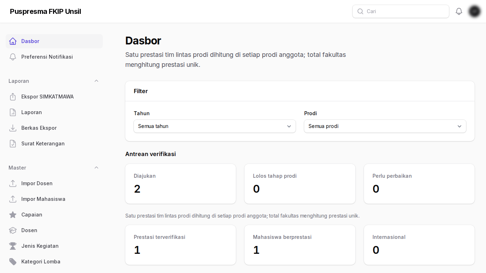
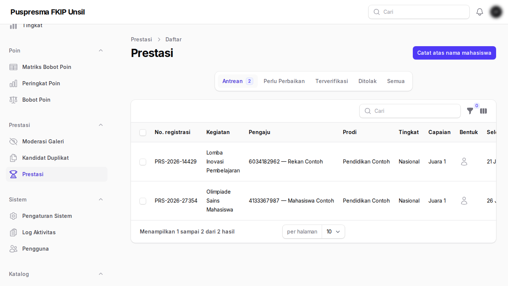
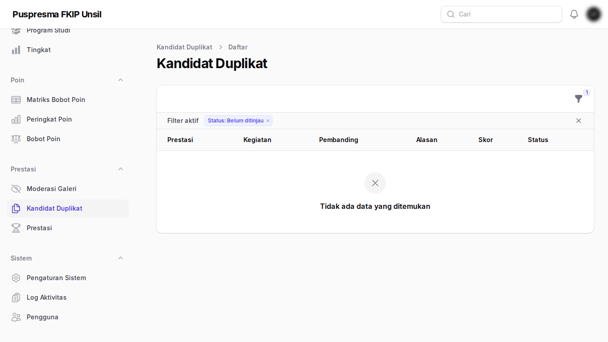
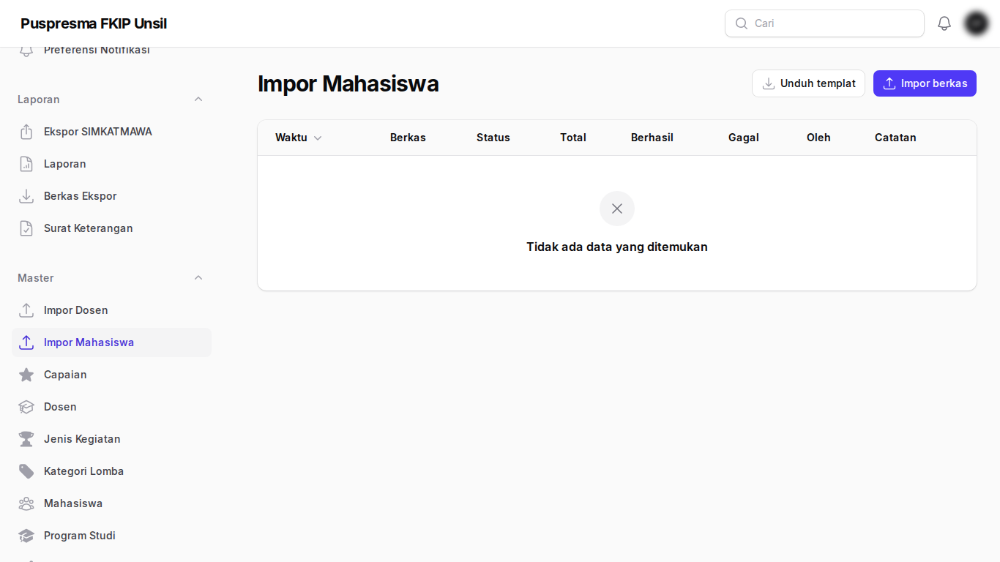
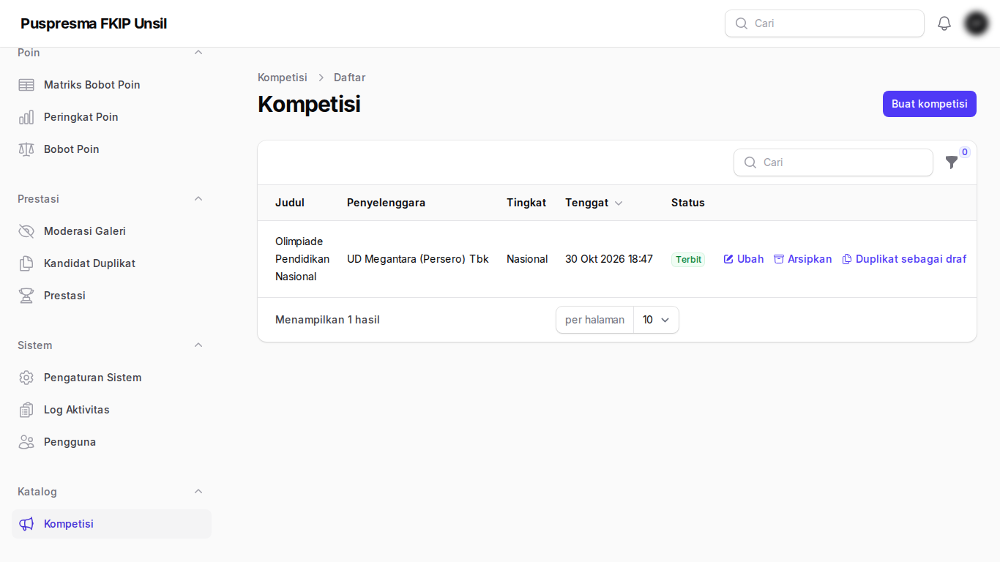
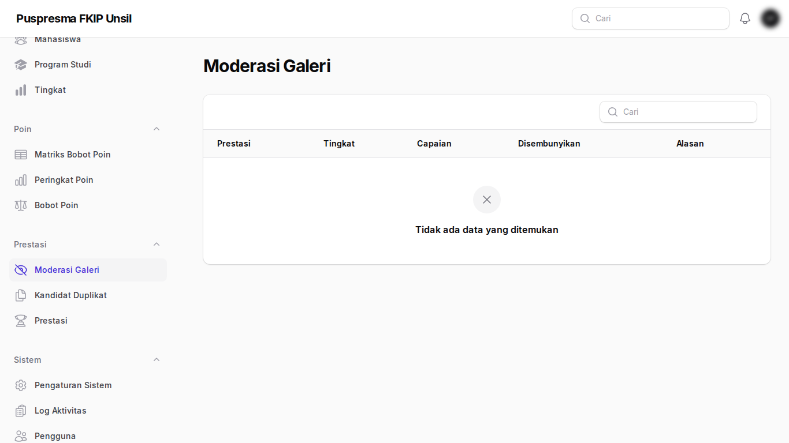
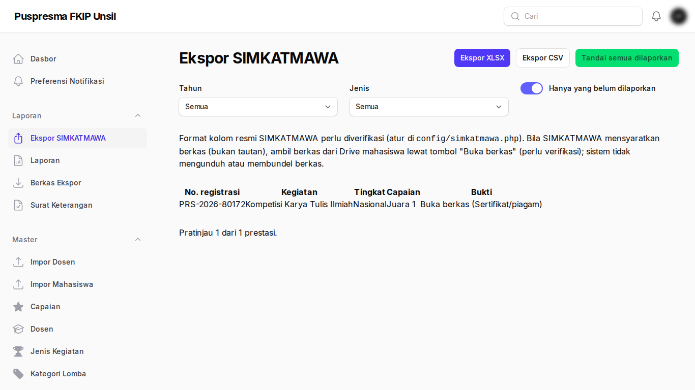
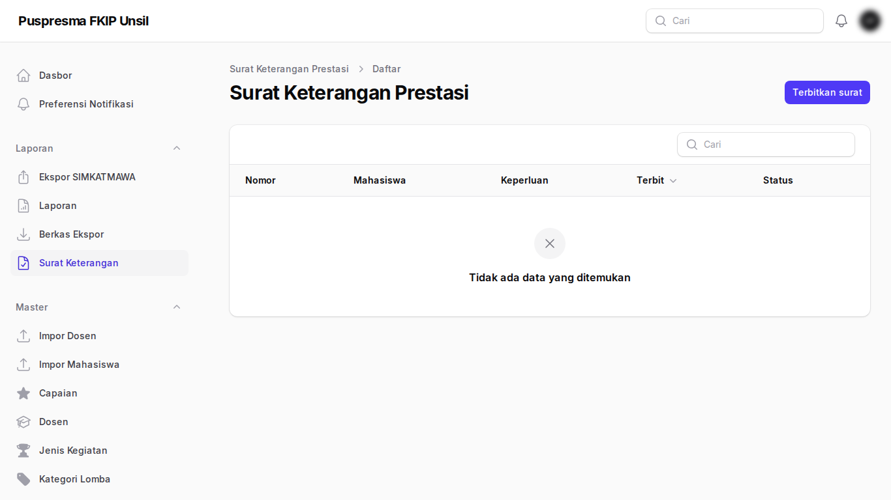
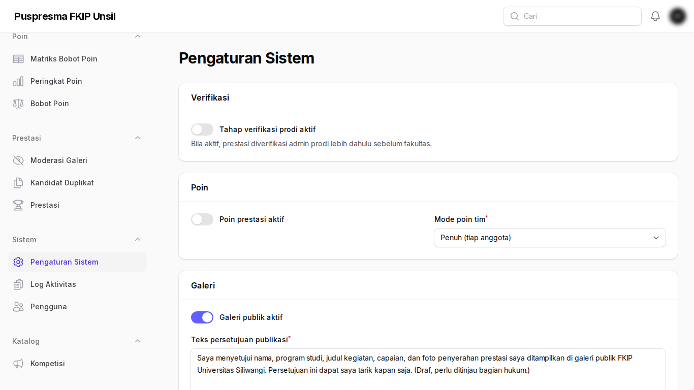
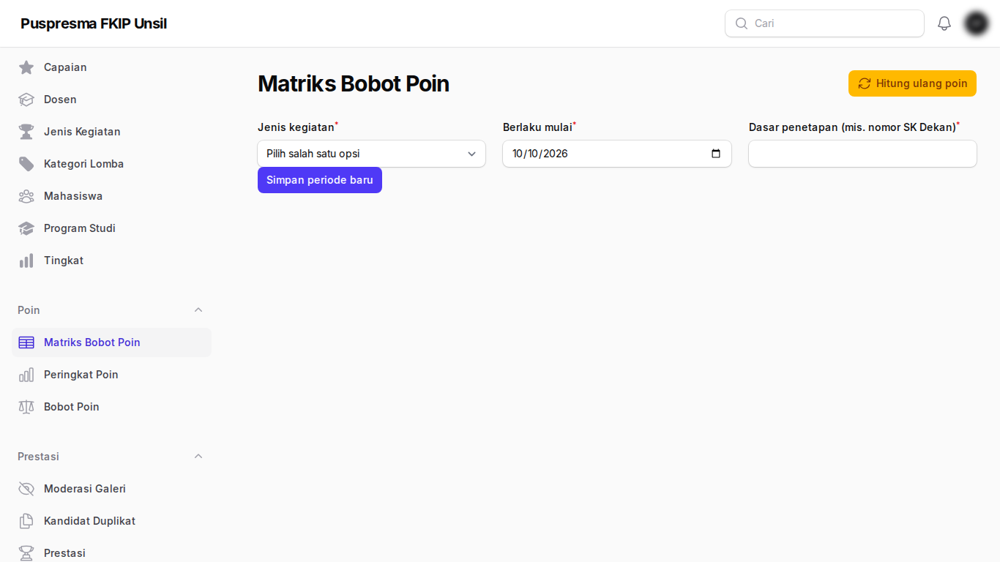

Panduan Admin Fakultas
Tujuan
Memegang verifikasi akhir, meninjau duplikat, mengelola impor, katalog, galeri, SIMKATMAWA, surat keterangan, pengaturan, dan bobot poin.
Cara masuk
Masuk di panel Admin. Peran ini wajib mengaktifkan autentikasi dua langkah (aplikasi authenticator) pada login pertama.
Langkah-langkah
- Dasbor fakultas. Ringkasan seluruh fakultas dan kartu antrean.

Dasbor fakultas - Antrean verifikasi. Periksa prestasi, buka setiap tautan bukti (wajib), lalu verifikasi atau kembalikan dengan catatan.

Antrean verifikasi - Kandidat duplikat. Tinjau pasangan prestasi yang mirip; kandidat belum ditinjau memblokir verifikasi.

Kandidat duplikat - Impor mahasiswa. Impor Excel/CSV master mahasiswa (upsert berdasarkan NPM).

Impor mahasiswa - Katalog kompetisi. Kelola informasi lomba; yang lewat tenggat diarsipkan otomatis.

Katalog kompetisi - Moderasi galeri. Sembunyikan prestasi dari galeri publik bila perlu.

Moderasi galeri - Ekspor SIMKATMAWA. Unduh kolom terpetakan dan tandai prestasi dilaporkan.

Ekspor SIMKATMAWA - Surat keterangan. Terbitkan dan cetak surat ber-QR.

Surat keterangan - Pengaturan sistem. Ambang, tahap verifikasi prodi, dan mode poin.

Pengaturan sistem - Matriks bobot poin. Atur bobot jenis × tingkat × capaian yang berlaku per tanggal.

Matriks bobot poin
Tanya-jawab
- Tombol verifikasi nonaktif.
- Periksa kandidat duplikat yang belum ditinjau, tautan yang belum dibuka, atau konfirmasi pembimbing yang disangkal.
- Mengganti tautan setelah terverifikasi?
- Hanya admin fakultas dengan catatan; URL lama dan baru dicatat.